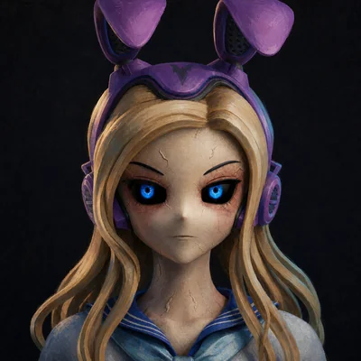
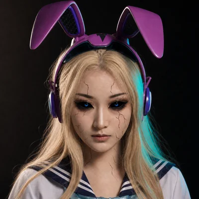

01 · 這支片在做什麼換掉的是世界，不是她
REROLL 的原意是「重抽」：不滿意就再抽一次。在一個外型可以隨時重抽的世界裡，這間店反過來做——你按下按鈕，被換掉的是你身邊的世界，你自己留在原地。
這也是我們想測的事。做影片時最難的，往往不是特效，而是同一個角色連續換了好幾個場景，還認不認得出是她。所以故事本身就是測試：世界換了三次，Bunny 必須從頭到尾是同一個人。片尾那句「你不用變，世界會。」既是這間店的標語，也是 UCX「選擇不變」的另一種說法。
這是一支賽前彩排作品，不是參賽作品。演出的是史旺基自己持有的五位 CloneX：Bunny 是主角、#17474 是店員、#17152 是排在下一位的客人，#9268 與 #15162 在結尾的伸展台登場。
02 · 故事節拍五段，90 秒，最後 3 秒片名
- 0–15 秒雨夜店門，一圈光掃過全身
雨打在騎樓上，遠處是 101 的剪影。Bunny 走進白色門光裡站定；店員抬手，一圈淡青色的光從她腳邊往上掃過全身。掃描時，她的服裝、身形、姿勢都沒有變。
- 15–30 秒白色試衣間，全片唯一一句台詞
店員攤掌指向一顆懸浮的按鈕。Bunny 轉向鏡頭說：「換一個世界試試。」然後伸手按下去。
- 30–60 秒一鏡到底，連換三個世界
整段不剪接，鏡頭繞著她慢慢轉。一道光牆掃過，雨後的台北街頭變成日落沙漠；再一道，沙漠變成太空站，她站在大窗前，窗外是地球的弧線。這是全片最核心的一段。
- 60–75 秒門口擦身，下一位已經在排隊
Bunny 走回濕亮的街上，和排在下一位的 #17152 擦身而過，兩人對看了一眼。他走到門前，手腕上亮起一個「已擁有」的符號，門在他身後關上。
- 75–90 秒白色伸展台，成員並肩定格
成員們從伸展台遠端一起走向鏡頭，站成一排定住。接著是片名與標語「你不用變，世界會。」卡通版是五人；擬真版的這一段最後改成四人，原因寫在下面。
03 · 兩個版本同一份節拍，兩種畫面
兩版用的是同一份故事節拍、同一套分鏡，只換畫風。這樣比較最乾淨：哪裡不一樣，一看就知道是畫風造成的，不是故事改了。


為什麼要做兩版？因為拿到一個角色時，不一定知道哪種畫風最適合。先把兩條路都走過一遍，之後遇到偏卡通或偏寫實的角色，都知道會卡在哪裡。結果兩版的前四段，第一次生成就都過關；麻煩集中在最後那段多人同框。
04 · 做的時候學到的事真正卡住的地方
- 連換三個世界，她還是她
最擔心的一鏡到底反而做成了：30 秒不剪接、換了三個世界，臉、耳機和制服都對得上。關鍵是每次都給足同一位角色的多角度造型圖當依據。
- 寫實的參考圖，可能被當成真人照片擋下
擬真版有一部分寫實造型圖，被生成服務判定「可能是真人」而拒收；卡通造型則全部通過。寫實路線要多準備幾張，只用過得了關的那幾張。
- 同一段裡，別混用不同畫風的參考
擬真版伸展台那段，某位成員的寫實造型圖全被擋下，改拿卡通造型去補，結果整段被帶成動畫。最後寧可少一個人、改成四人，也要讓同一段的參考全是同一種畫風。
- 只寫「高挑」，人會被拉得太長
描述身材時，只寫高挑，角色會被拉成不自然的比例；要寫清楚「自然比例、不要拉長」。多人同框時，要直接寫誰比誰高半個頭，而不是籠統地說誰比較高。
- 背景招牌會冒出亂碼假字
街景的招牌常被畫上看不懂的假文字。後來規定所有招牌一律留白，片名和標語在剪接時才另外放上去。
- 不一定需要配樂
兩版都只用生成畫面時一起產生的聲音：雨聲、腳步、按鈕音和那一句台詞，沒有另外配樂，看片時也接受了。
更完整的製作流程，另見技術專欄〈AI 影片不是輸入一句話就好〉。